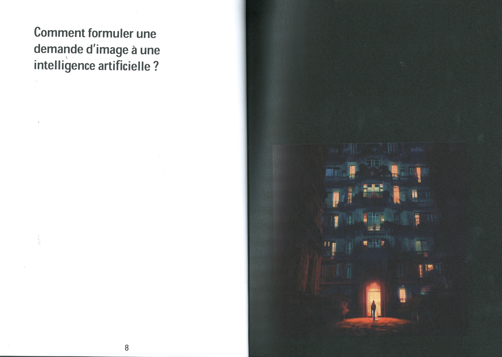
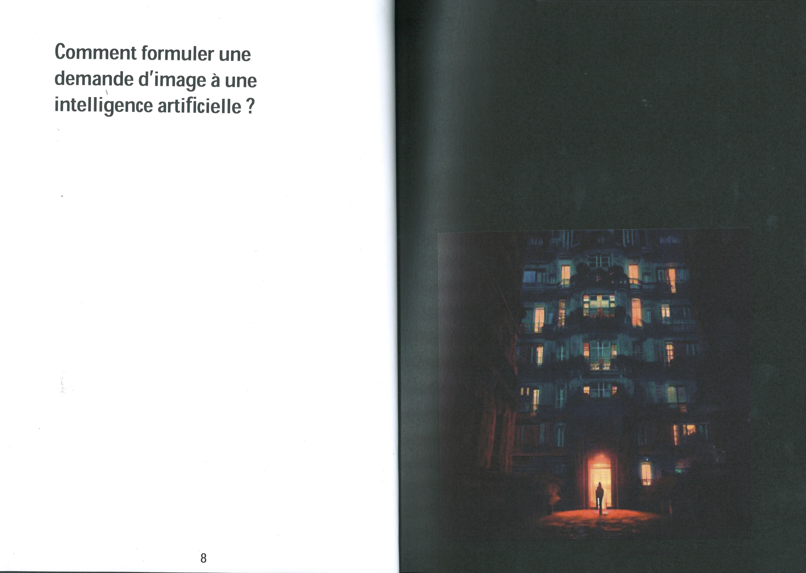
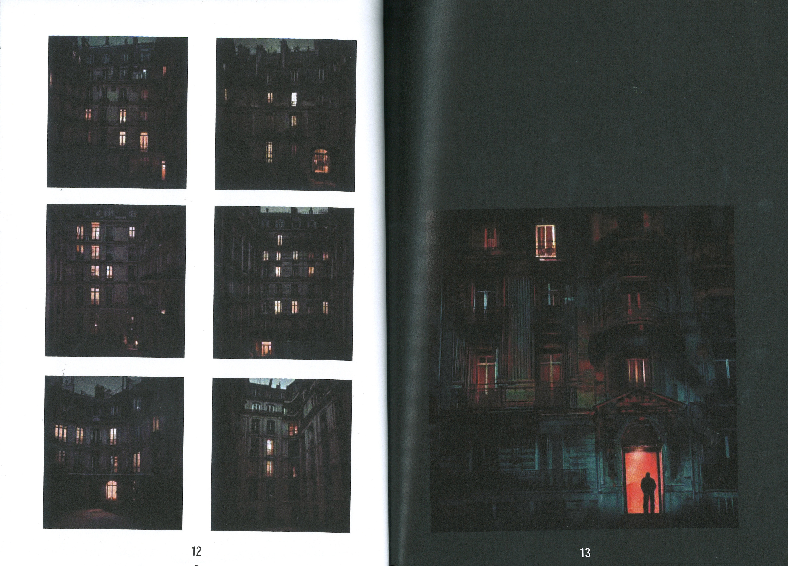
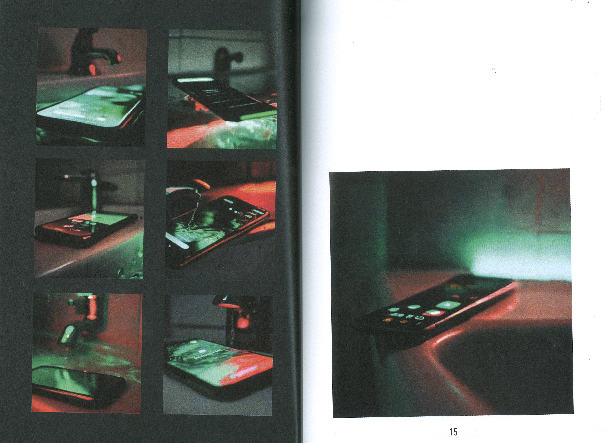
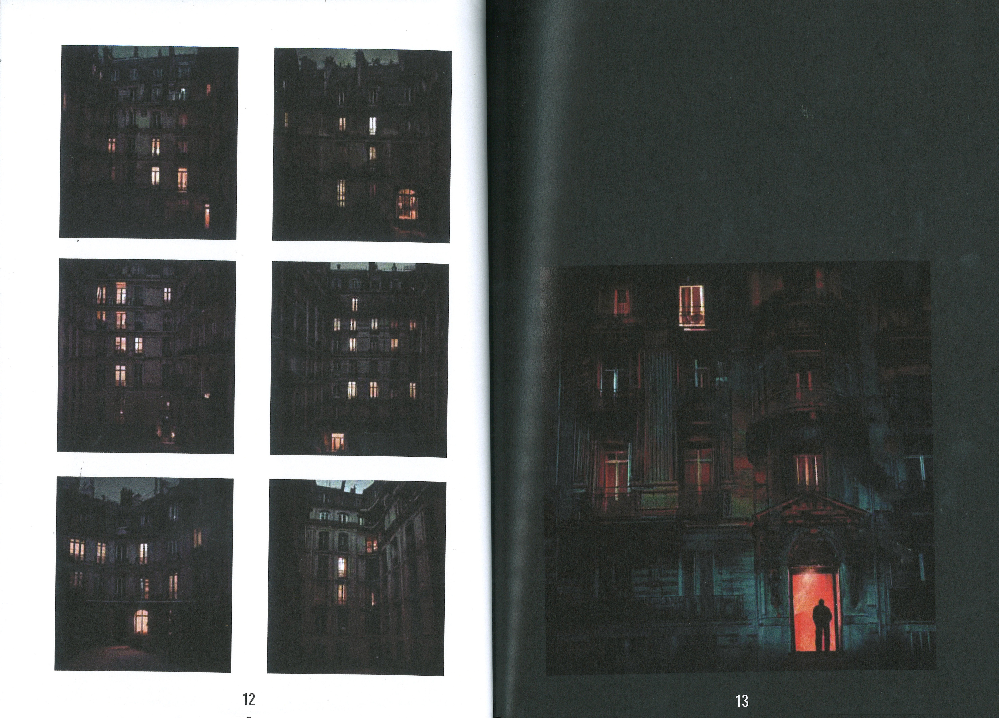
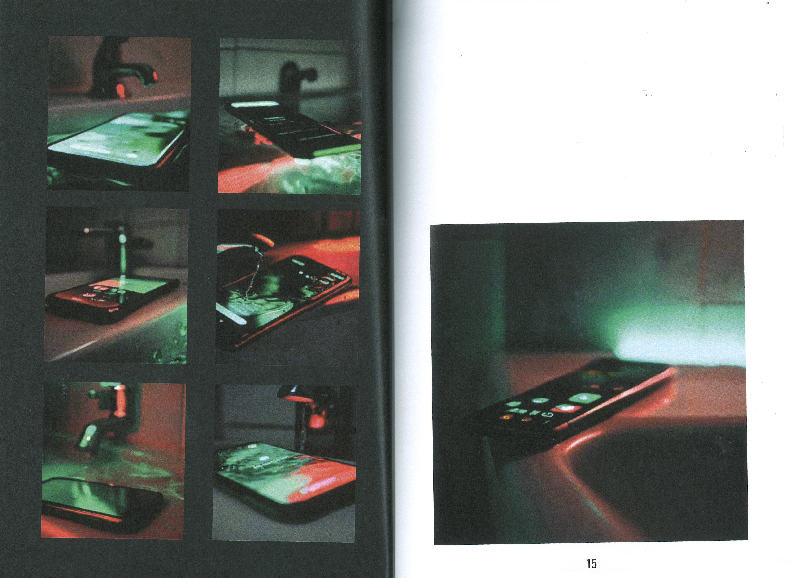
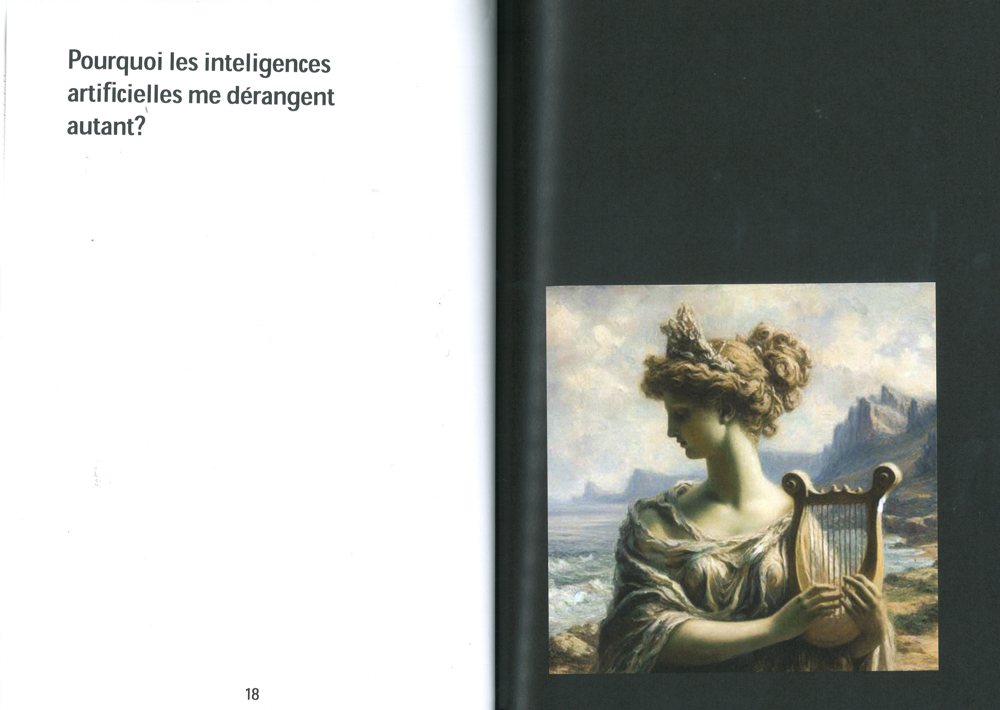
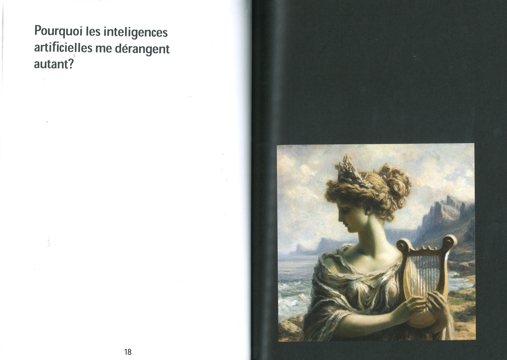

"ÇA ME DÉRANGE" LES INTELLIGENCES ARTIFICIELLES
« Ça me dérange » est une édition relatant mon ressenti et ma première expérience avec les intelligences artificielles dans le contexte des pochettes de vinyle. J'ai mis en avant mes plus grandes interrogations et les problèmes que j'ai rencontrés lors de l'utilisation de DALL-E. Cette édition reflète à la fois les images que j'ai générées pour mes pochettes de vinyle et celles créées par simple curiosité. J'ai appris à générer des images conformes à mes idées initiales, tout en comprenant comment formuler et modifier les demandes pour me rapprocher au mieux de l'idée souhaitée.

 

 



 
